<meta charset="utf-8">
<title>League of Degenerates - 2025 Season in Review</title>
<meta name="viewport" content="width=device-width, initial-scale=1">
<meta name="description" content="Degenerate GM Dynasty League - 2025 season in review, the Commissioner's memo, standings, all-play, the 2026 draft board, dynasty board, history, and the record book.">
<link rel="stylesheet" href="./style.css">

<nav class="topnav">
  <div class="wrap">
    <a class="brand" href="./index.html" aria-label="League of Degenerates"><span class="brand-full" aria-hidden="true">LEAGUE OF <span class="lod-red">DEGENERATES</span></span><span class="brand-short" aria-hidden="true">LO<span class="lod-red">D</span></span></a>
    <a class="navlink current" href="./index.html">Home</a>
    <a class="navlink" href="./memo.html">Memo</a>
    <a class="navlink" href="./standings.html">Standings</a>
    <a class="navlink" href="./allplay.html">All-Play</a>
    <a class="navlink" href="./draft.html">Draft</a>
    <a class="navlink" href="./dynasty.html">Dynasty</a>
    <a class="navlink" href="./history.html">History</a>
    <a class="navlink" href="./record.html">Record Book</a>
  </div>
</nav>

<!-- ================= SPRAYPAINT HERO ================= -->
<header class="hero">
  <svg class="hero-wall-grain" width="100%" height="100%" preserveAspectRatio="none" aria-hidden="true" focusable="false">
    <filter id="grain">
      <feTurbulence type="fractalNoise" baseFrequency="0.9" numOctaves="2" stitchTiles="stitch" result="noise"></feTurbulence>
      <feColorMatrix in="noise" type="matrix" values="0 0 0 0 1  0 0 0 0 1  0 0 0 0 1  0 0 0 0.05 0"></feColorMatrix>
    </filter>
    <rect width="100%" height="100%" filter="url(#grain)"></rect>
  </svg>
  <div class="wrap hero-inner">
    <h1 class="sr-title">League of Degenerates</h1>

    <div class="spray-wrap">
      <svg width="0" height="0" style="position:absolute" aria-hidden="true" focusable="false">
        <defs>
          <filter id="roughen" x="-25%" y="-25%" width="150%" height="150%">
            <feTurbulence type="fractalNoise" baseFrequency="0.012 0.02" numOctaves="2" seed="7" result="noise"></feTurbulence>
            <feDisplacementMap in="SourceGraphic" in2="noise" scale="9" xChannelSelector="R" yChannelSelector="G"></feDisplacementMap>
          </filter>
          <filter id="redglow" x="-60%" y="-60%" width="220%" height="220%">
            <feColorMatrix type="matrix" values="0 0 0 0 0  0 0 0 0 0  0 0 0 0 0  1 -0.6 -0.6 0 0" result="redmask"></feColorMatrix>
            <feGaussianBlur in="redmask" stdDeviation="7" result="blurmask"></feGaussianBlur>
            <feFlood flood-color="#ff5a3c" flood-opacity="0.95" result="redcolor"></feFlood>
            <feComposite in="redcolor" in2="blurmask" operator="in" result="glow"></feComposite>
            <feMerge>
              <feMergeNode in="glow"></feMergeNode>
            </feMerge>
          </filter>
        </defs>
      </svg>
      
      
      
      <div class="drip d1"></div><div class="drip d2"></div><div class="drip d3"></div>
    </div>
  </div>
</header>

<!-- ================= PINNED COUNTDOWN BOARD ================= -->
<section class="countdown-board" id="countdown-board">
  <div class="wrap">
    <p class="cd-eyebrow">2026 Offseason Clock</p>
    <div class="cd-grid" id="cd-grid"></div>
    <div class="cd-derivation">
      <strong>How these dates were figured out:</strong>
      <ul>
        <li>The <strong>Rookie/FA Draft</strong> date and time come straight from the league's Sleeper draft room.</li>
        <li>The <strong>Roster + Franchise Tag Deadline</strong> is set by Rule 6.12, which requires it to land at least one week before the draft - seven days out this year.</li>
        <li>The <strong>Contract Deadline</strong> follows Rule 6.07: contracts are due by the first NFL regular season game after the draft. The 2026 season opens on Wednesday, September 9 (the league opens on a Wednesday this year instead of the usual Thursday), so the deadline lands on a Wednesday too, at 5:00 PM Central on kickoff day.</li>
        <li>The <strong>Trade Deadline</strong> has landed on the Wednesday before Thanksgiving every year on record (11/22/23, 11/27/24, 11/26/25). In 2026 that is November 25.</li>
      </ul>
    </div>
  </div>
</section>

<!-- ================= EXPIRING PLAYERS TEASER ================= -->
<section id="expiring-teaser">
  <div class="wrap">
    <div class="cd-derivation">
      <strong>What Happens to Expiring Players</strong>
      <p style="margin:8px 0 0;">The roster deadline (Saturday, August 29) is your last chance to do anything about a player whose contract shows <strong>0</strong> or no number at all. Re-sign him, franchise tag him, or lose him - anything left untouched drops straight into the Rookie/FA draft pool on September 5. <a href="./draft.html#expiring-players">Full rundown on the Draft page &rarr;</a></p>
    </div>
  </div>
</section>

<main>

<!-- ================= CHAMPION + STAT ROW ================= -->
<section id="champ">
  <div class="wrap">
    <div class="champ-callout">
      <div class="ring">&#127942;</div>
      <div class="cc-text">
        <div class="cc-label">2025 Champion</div>
        <div class="cc-name">Levon - Better Bijaness Burrow</div>
        <div class="cc-detail" id="hero-champ-detail">Loading...</div>
      </div>
    </div>

  </div>
</section>

<!-- ================= TEASERS ================= -->
<section id="teasers">
  <div class="wrap">
    <div class="section-head">
      <p class="section-kicker">Get Into It</p>
      <h2 class="section-title">The Rest of the Site</h2>
    </div>
    <div class="teaser-grid">
      <a class="teaser-card" href="./memo.html">
        <div class="tc-label">The Centerpiece</div>
        <h3>The Commissioner's Memo</h3>
        <p>Levon's title, Tony Loff's 11-3 collapse, the Hannah Cliff, and the news that the champion is moving back to the US.</p>
        <span class="tc-arrow">Read it &rarr;</span>
      </a>
      <a class="teaser-card" href="./standings.html">
        <div class="tc-label">Final Word</div>
        <h3>2025 Standings + Awards</h3>
        <p>Playoff-adjusted final order, regular season records, and the superlatives: biggest blowout, closest game, luckiest team.</p>
        <span class="tc-arrow">See standings &rarr;</span>
      </a>
      <a class="teaser-card" href="./allplay.html">
        <div class="tc-label">The Evidence</div>
        <h3>All-Play Standings</h3>
        <p>The fraud detector. Every team's record against the full field, every week, and who the schedule actually helped.</p>
        <span class="tc-arrow">See the evidence &rarr;</span>
      </a>
      <a class="teaser-card" href="./draft.html">
        <div class="tc-label">2026 Offseason</div>
        <h3>The Draft Board</h3>
        <p>Ryan M holds three straight first round picks. Tony Loff holds none. Real pick ownership, not just the earned order.</p>
        <span class="tc-arrow">See the board &rarr;</span>
      </a>
      <a class="teaser-card" href="./dynasty.html">
        <div class="tc-label">Contracts &amp; Rosters</div>
        <h3>The Dynasty Board</h3>
        <p>The 2026 contract cliff, seven years of busts and hoarding, and the Hannah Cliff bearing down on the draft.</p>
        <span class="tc-arrow">See the board &rarr;</span>
      </a>
      <a class="teaser-card" href="./history.html">
        <div class="tc-label">2020 - 2025</div>
        <h3>League History</h3>
        <p>Six years of final standings, champions by year, and title counts, straight from the memo archive and Sleeper.</p>
        <span class="tc-arrow">See history &rarr;</span>
      </a>
      <a class="teaser-card" href="./record.html">
        <div class="tc-label">All-Time</div>
        <h3>The Record Book</h3>
        <p>Lifetime standings, an interactive head to head explorer, and the all-time records - highest week, longest streaks, closest game ever.</p>
        <span class="tc-arrow">See the record book &rarr;</span>
      </a>
    </div>
  </div>
</section>

</main>

<footer>
  <div class="wrap">
    <p>Built from the Commissioner's memo archive, six years of Sleeper screenshots, and the Sleeper public API. Every number on this site traces back to those sources.</p>
    <p>
      <a href="https://docs.google.com/spreadsheets/d/1sHKHy68gdvJ45d9gZ9Q1zn-PsI_kiX2Ry_26Z_AW55A/edit" target="_blank" rel="noopener">Roster &amp; contract spreadsheet</a>
      &nbsp;&middot;&nbsp;
      <a href="https://docs.google.com/document/d/1vWsTgE6UTYll9OBmeRURIGGkpWI1rGUtr29fbQknX2A/edit" target="_blank" rel="noopener">Be A GM League Manual (rulebook)</a>
    </p>
    <p class="fine">League of Degenerates / Degenerate GM Dynasty League. Not affiliated with the NFL, Sleeper, or any team's actual front office.</p>
  </div>
</footer>

<script src="./data.js"></script>
<script src="./app.js"></script>
